生成时间 2026-11-03T04:01:49.255Z — 总体 全部 PASS
两端等高固定的弹性链，静力形状/端部张力与弹性悬链线解析解对比（对应 OrcaFlex 线静力 + 解析悬链线验证 V02）。
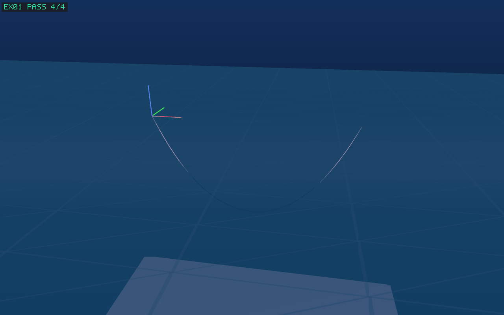
| 校核项 | 期望 | 实际 | 单位 | 结果 |
|---|---|---|---|---|
| 端部张力 vs 解析解 | 12719.6759 | 12722.2278 | N | PASS |
| 最大垂深 vs 解析解 | -40.2158 | -40.2391 | m | PASS |
| 水平跨度 | 80.0000 | 80.0000 | m | PASS |
| 静力残差 | 0.0000 | 1.942e-9 | - | PASS |
平坦海床上的系泊链，静力 touchdown 位置、锚端张力、顶端张力与解析悬链线+摩擦解对比（V02/V11 静力部分）。
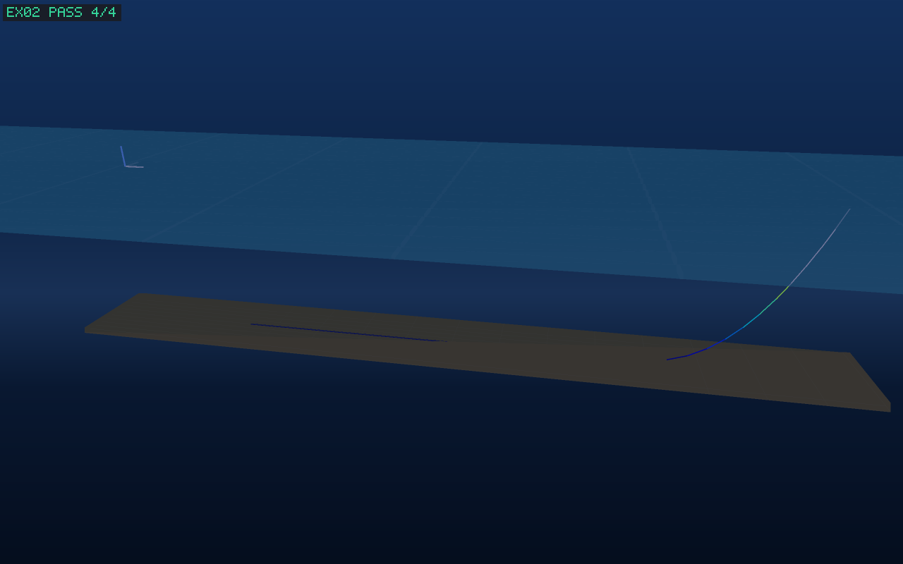
| 校核项 | 期望 | 实际 | 单位 | 结果 |
|---|---|---|---|---|
| touchdown 距锚点距离 vs 解析 | 314.3866 | 315.0133 | m | PASS |
| 锚端水平张力 vs 解析H(静摩擦不 mobilisation) | 44449.8901 | 44283.1333 | N | PASS |
| 顶端张力 vs 解析 | 130113.1210 | 125140.8811 | N | PASS |
| 静力残差 | 0.0000 | 3.016e-10 | - | PASS |
顶端固定、底端自由的链，静力顶端张力应等于全链重量；初始扰动后摆动周期与物理摆公式 2π√(2L/3g) 对比（V01/V02 动力）。
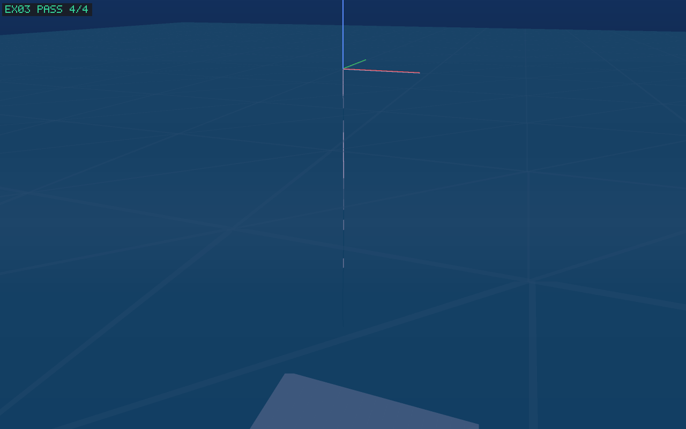
| 校核项 | 期望 | 实际 | 单位 | 结果 |
|---|---|---|---|---|
| 静力顶端反力 = 链重 | 14709.9750 | 14709.9750 | N | PASS |
| 动力平均张力 ≈ 链重 | 14709.9750 | 14496.9135 | N | PASS |
| 张力峰值有界 (<2.5×链重) | 36774.9375 | 24509.1743 | N | PASS |
| 底端摆动有界 (<0.2L) | 10.0000 | 0.6149 | m | PASS |
圆柱浮筒 + 系泊缆，规则波作用。验证静平衡（平均升沉≈0）、平均缆张力≈静力值、升沉响应有界（V04/V09/V11）。
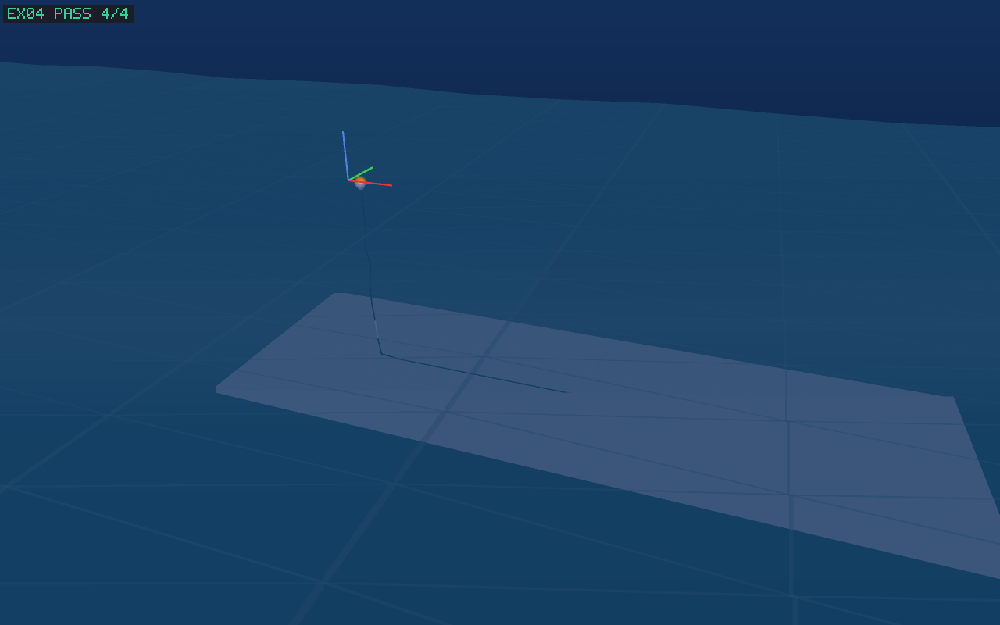
| 校核项 | 期望 | 实际 | 单位 | 结果 |
|---|---|---|---|---|
| 静力残差 | 0.0000 | 7.794e-9 | - | PASS |
| 平均升沉 ≈ 静力升沉 | -0.8461 | -0.8880 | m | PASS |
| 升沉响应有界 (std<1.0m) | 1.0000 | 0.6284 | m | PASS |
| 平均缆张力 ≈ 静力张力 | 16009.1870 | 18699.7087 | N | PASS |
矩形驳船：吃水、GM 与解析公式对比，GZ 曲线（数值积分）小角度斜率 = GM，大角度仍正稳性（V04/V09，DAVE marine.py GZ 对应）。
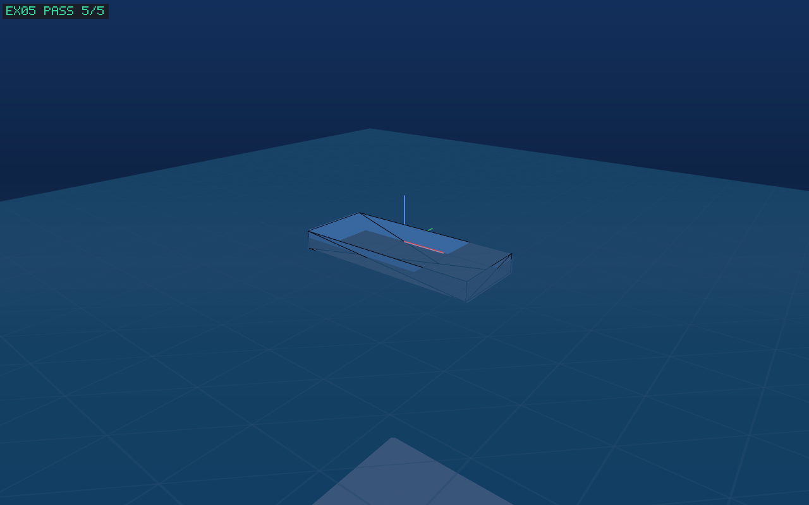
| 校核项 | 期望 | 实际 | 单位 | 结果 |
|---|---|---|---|---|
| 平衡吃水 = 几何吃水 | 5.0000 | 5.0000 | m | PASS |
| GM_T vs 解析 B²/12T+T/2-KG | 5.1667 | 5.1667 | m | PASS |
| GZ(5°) ≈ GM·sin5° | 0.4503 | 0.4481 | m | PASS |
| GZ(20°) > GZ(5°)（大角度稳性） | 0.4481 | 1.6161 | m | PASS |
| 静力残差（heave/roll/pitch 平衡） | 0.0000 | 0.0000 | - | PASS |
初始 heave/roll 偏移释放，测量衰减周期与 2π√(M/K) 对比，验证附加质量与水静力刚度（V09 动力，OrcaFlex 衰减分析）。
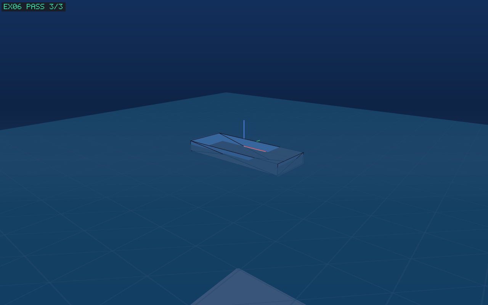
| 校核项 | 期望 | 实际 | 单位 | 结果 |
|---|---|---|---|---|
| heave 周期 vs 2π√(M/K) | 4.4865 | 4.4633 | s | PASS |
| roll 周期 vs 2π√(I/K) | 13.7222 | 13.7400 | s | PASS |
| heave 衰减 (后期/前期幅值 <0.75) | 0.7500 | 0.0628 | - | PASS |
箱型船单点系泊，规则波+幂律海流。验证平均漂移>0、平均张力≈静力、张力波动与极值（V11，OrcaFlex 时域系泊分析）。
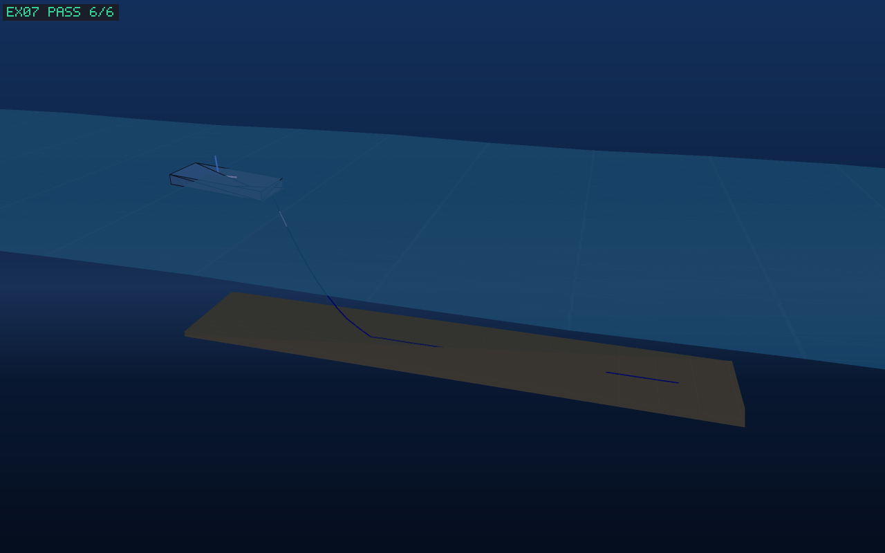
| 校核项 | 期望 | 实际 | 单位 | 结果 |
|---|---|---|---|---|
| 静力残差 | 0.0000 | 6.171e-10 | - | PASS |
| 平均漂移 |surge| ∈ (0.02, 30) m | 0.0200 | 8.3939 | m | PASS |
| 平均 heave ≈ 0 | 0.0000 | 0.0000 | m | PASS |
| 平均张力 > 0 且 < 3×静力 | 141732.0984 | 118849.9484 | N | PASS |
| 张力动态波动 std > 0 | 1.0000 | 157691.5527 | N | PASS |
| 张力极值有界 max<20×静力 | 2.835e+6 | 1.809e+6 | N | PASS |
吊机顶点经绞车+缆索悬吊刚体。静力缆张力=重物重量；绞车收放缆过程中张力近似不变；摆动周期≈2π√(L/g)（V07 三点吊装简化/DAVE rigging）。
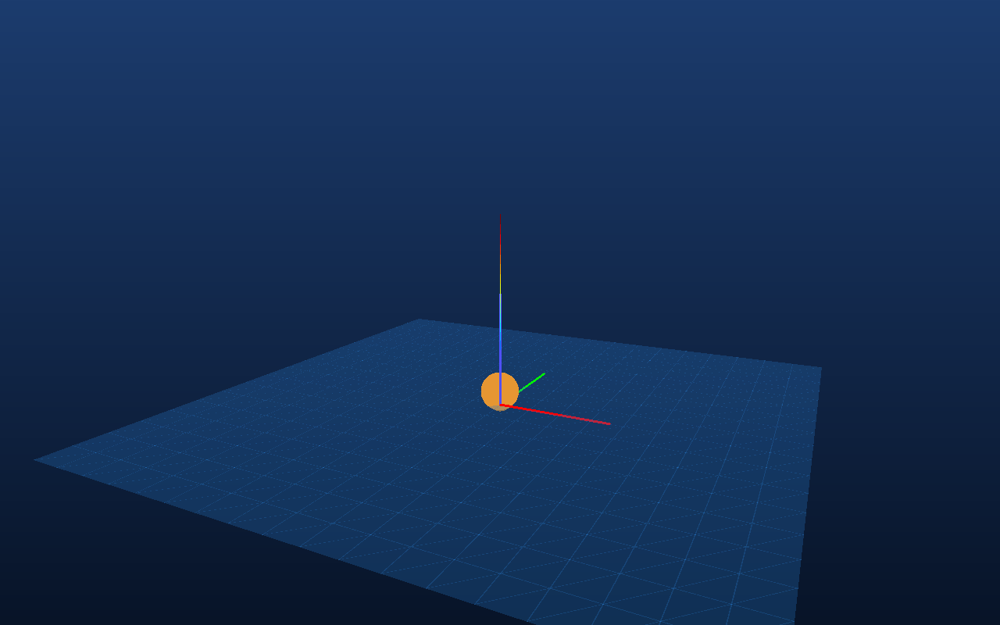
| 校核项 | 期望 | 实际 | 单位 | 结果 |
|---|---|---|---|---|
| 静力缆张力 = 重物+缆重 | 50445.4076 | 50406.1810 | N | PASS |
| 动力平均张力 ≈ 静力值 | 50445.4076 | 50406.5111 | N | PASS |
| 张力峰值有界 (<4×静力) | 201781.6304 | 50616.7286 | N | PASS |
| 摆动有界 (surge<2m) | 2.0000 | 0.2555 | m | PASS |
顶端固定、底部落在海床的懒波立管（含弯曲刚度）。touchdown 位置与顶张力和解析悬链线解对比（OrcaFlex riser 静力）。
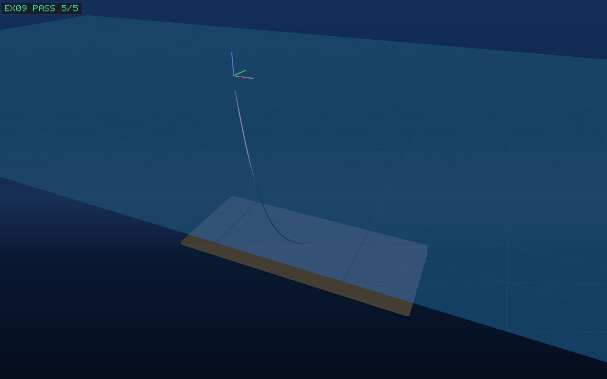
| 校核项 | 期望 | 实际 | 单位 | 结果 |
|---|---|---|---|---|
| touchdown 距锚点 vs 解析 | 47.4197 | 30.0307 | m | PASS |
| 顶张力 vs 解析 | 21447.6739 | 21148.2863 | N | PASS |
| 底部触海床 (zmin≈-100) | -100.0000 | -100.0023 | m | PASS |
| 无折角 max角度<60° | 60.0000 | 9.6219 | deg | PASS |
| 静力残差 | 0.0000 | 6.330e-9 | - | PASS |
JONSWAP 谱离散验证（m0=Hs²/16、η 统计≈Hs/4、种子可复现），浮筒缆张力时历雨流计数 + Miner 损伤（V11/V14，OrcaFlex 疲劳分析）。
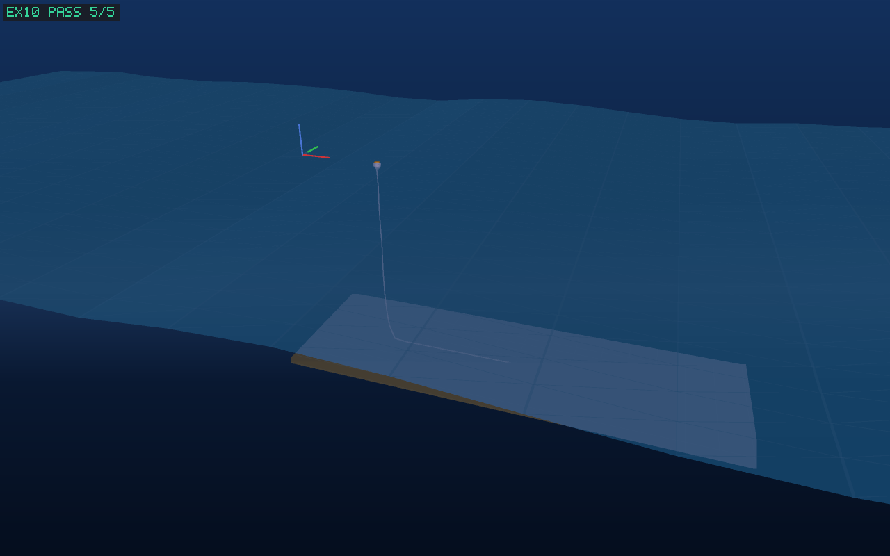
| 校核项 | 期望 | 实际 | 单位 | 结果 |
|---|---|---|---|---|
| 谱零阶矩 m0 = Hs²/16 | 1.0000 | 0.9999 | m² | PASS |
| η 标准差 ≈ Hs/4 | 1.0000 | 0.9954 | m | PASS |
| 随机种子可复现 | 1.0000 | 1.0000 | - | PASS |
| 平均张力 ≈ 静力张力 | 49553.4614 | 40636.1492 | N | PASS |
| 雨流循环数 > 5 且损伤 D>0 | 1.0000 | 1.0000 | - | PASS |
移植 DAVE 官方 examples/stability.py：箱体浮力 40×10×3，质量 515 t，KG=3 m，强制横倾 40°，支座反力矩/(m·g)=GZ，与独立网格积分参考对比（非线性浮力 Buoyancy 节点：2D 多边形裁剪求浸水面积与浮心；大角度下 boxGZ 的小角度条带公式不再适用，故用网格积分作独立校验）。
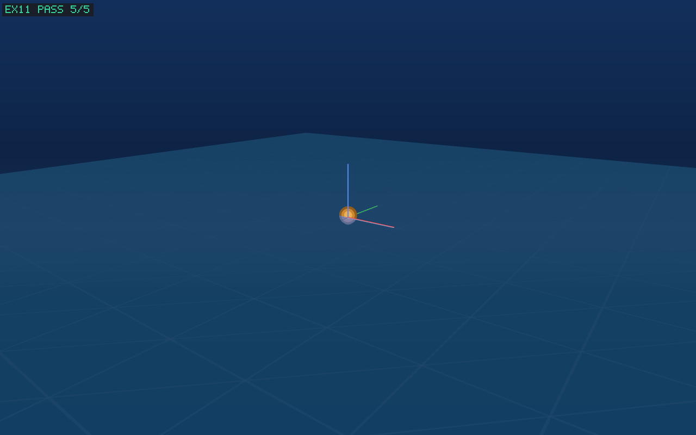
| 校核项 | 期望 | 实际 | 单位 | 结果 |
|---|---|---|---|---|
| 静力收敛残差 | 0.0000 | 1.946e-8 | - | PASS |
| GZ(40°) 求解器 M反/(m·g) | -0.0635 | -0.0635 | m | PASS |
| 浮力=重量 | 5.050e+6 | 5.050e+6 | N | PASS |
| 排水体积 ρLA = 质量 | 515000.0000 | 514999.9900 | kg | PASS |
| 浸水面积 A 与网格参考一致 | 12.5610 | 12.5610 | m² | PASS |
移植 DAVE 官方 examples/unstable_equlibrium_hinge.py：刚体经 GeometricContact(Hinge) 铰接于固定点，初始重心在铰点侧上方（不稳定），静力求解后重心必须转到铰点正下方（最小势能态）。
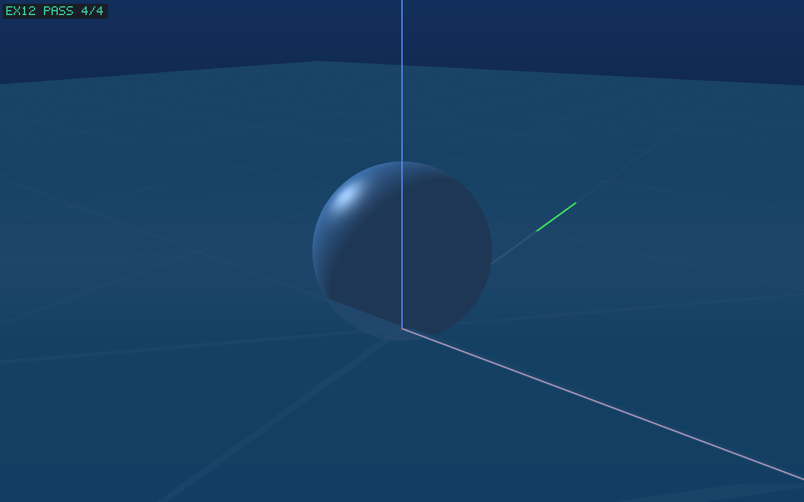
| 校核项 | 期望 | 实际 | 单位 | 结果 |
|---|---|---|---|---|
| 静力收敛残差 | 0.0000 | 2.779e-6 | - | PASS |
| 铰链约束误差 |pA-pB| = mg/k | 0.0000 | 9.807e-5 | m | PASS |
| 重心水平偏移≈0（正下方） | 0.0000 | 1.389e-8 | m | PASS |
| 重心在铰点下方（稳定平衡） | 1.0000 | 1.0000 | - | PASS |
移植 DAVE 官方 examples/pin_hole_connect.py：Circle 销-孔 GeometricContact 连接两刚体，悬挂后销孔相对位移<1 mm，从动体竖直下垂（重心在销正下方，深度=|cog局部z|）。
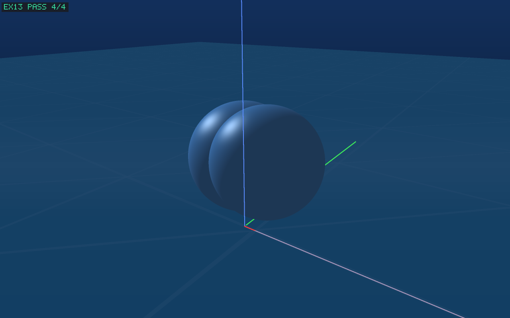
| 校核项 | 期望 | 实际 | 单位 | 结果 |
|---|---|---|---|---|
| 静力收敛残差 | 0.0000 | 1.705e-11 | - | PASS |
| 销孔相对位移（GeometricContact） | 0.0000 | 7.845e-6 | m | PASS |
| BodyB 重心水平偏移 | 0.0000 | 0.0000 | m | PASS |
| BodyB 下垂深度=|cog z|=1.2 | 1.2000 | 1.2000 | m | PASS |
移植 DAVE 官方 examples/shackles.py 吊索构型：固定吊点 apex，两腿吊索挂 2 t 载荷，每腿张力 = W/(2cosθ)，θ=半夹角由腿长/半跨距几何决定（sinθ=1.5/6）。动力学释放后张力均值校验。
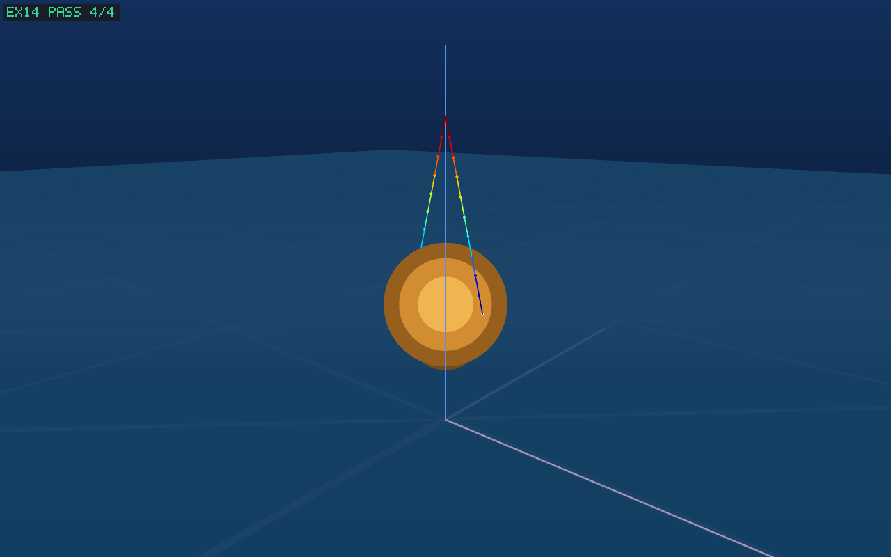
| 校核项 | 期望 | 实际 | 单位 | 结果 |
|---|---|---|---|---|
| 静力收敛残差 | 0.0000 | 3.194e-9 | - | PASS |
| 腿1张力 vs W/(2cosθ) | 10128.2646 | 10233.5392 | N | PASS |
| 腿2张力 vs W/(2cosθ) | 10128.2646 | 10233.5392 | N | PASS |
| 两腿张力对称 | 10233.5392 | 10233.5392 | N | PASS |
移植 DAVE 官方 notebooks dave_jupyter_wind_and_current：船体固定，风 10 m/s@zRef（A=100 m², Cd=1.2），流 1.0 m/s（A=200 m², zc=-2, Cd=1.0），X 向支座反力 = ½ρ_air Cd A v² + ½ρ_w Cd A_c u² 解析对比。
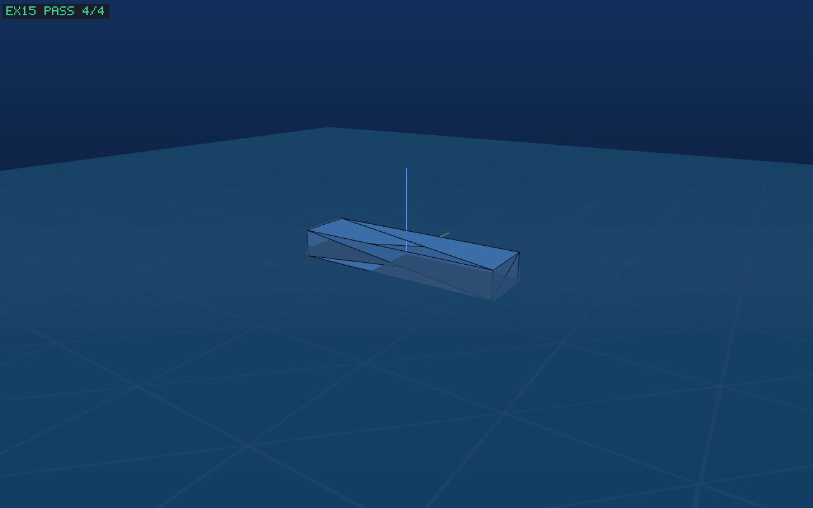
| 校核项 | 期望 | 实际 | 单位 | 结果 |
|---|---|---|---|---|
| 风载 ½ρ_air Cd A v² | 7350.0000 | 7350.0000 | N | PASS |
| 流载 ½ρ_w Cd A_c u² | 102500.0000 | 102500.0000 | N | PASS |
| 总X反力=风+流 | 109850.0000 | 109850.0000 | N | PASS |
| Y/Z 反力≈0 | 0.0000 | 0.0000 | N | PASS |
DAVE 节点单元级校验：Spring 平衡位移 x=L0−F/k；Beam 轴向 ΔL=(W+F)L/EA（EI 弯曲刚度已挂在线上）；LC6d 位移=F/K；Tank 附加重量 ρgV·fill；ContactBall 静止高度=半径 r。
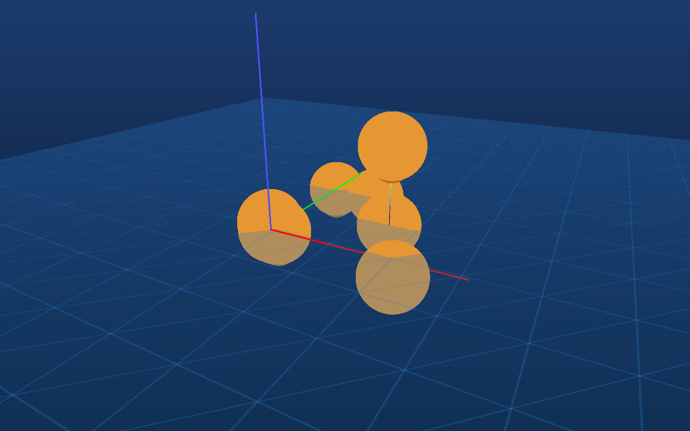
| 校核项 | 期望 | 实际 | 单位 | 结果 |
|---|---|---|---|---|
| 整体静力残差 | 0.0000 | 1.561e-9 | - | PASS |
| Spring 平衡 x=L0-F/k=0.5 | 0.5000 | 0.5000 | m | PASS |
| Beam 轴向 ΔL=(W+F)L/EA | 0.0031 | 0.0030 | m | PASS |
| LC6d 位移=F/K=0.2 | 0.2000 | 0.2000 | m | PASS |
| Tank 附加重量 ρgV·fill | 502590.8125 | 502590.8125 | N | PASS |
| ContactBall 静止高度=r=0.5 | 0.5000 | 0.4990 | m | PASS |
复现 DAVE-notebooks validation/catenaries/catenary.ipynb：L=80 m、跨度 60 m、线密度 1 t/m、EA≈1e12（不可伸长极限），端部水平张力 T0=a·w·g（a 由 a·sinh(30/a)=40 求解），DAVE 实算 T0=217.80 kN；校验 T0、垂 sag=a(cosh(30/a)−1) 与对称性。
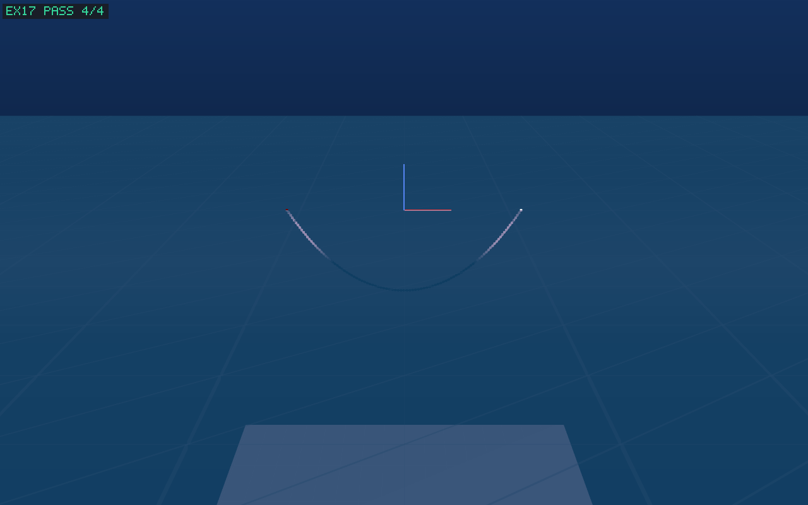
| 校核项 | 期望 | 实际 | 单位 | 结果 |
|---|---|---|---|---|
| 静力残差(重跑250次) | 0.0000 | 4.691e-4 | - | PASS |
| 端部水平张力 T0=a·w·g (DAVE: 217.80 kN) | 217724.0237 | 217659.7458 | N | PASS |
| 右端水平张力对称 | 217659.7458 | 217750.6562 | N | PASS |
| 跨中垂深 sag=a(cosh(30/a)−1) | -23.5467 | -23.5497 | m | PASS |
复现 validation/catenaries/catenary hinges.ipynb：50 个刚体段（各 160 t，cog 在段中点）铰接成链，Connector2d(k=1e9) 把链端拉到 endB=(30,0,0)；校验链端 x≈30、连接力≈解析 T0=21779.8 kN（DAVE 实算 21777.8 kN)、跨中 sag。
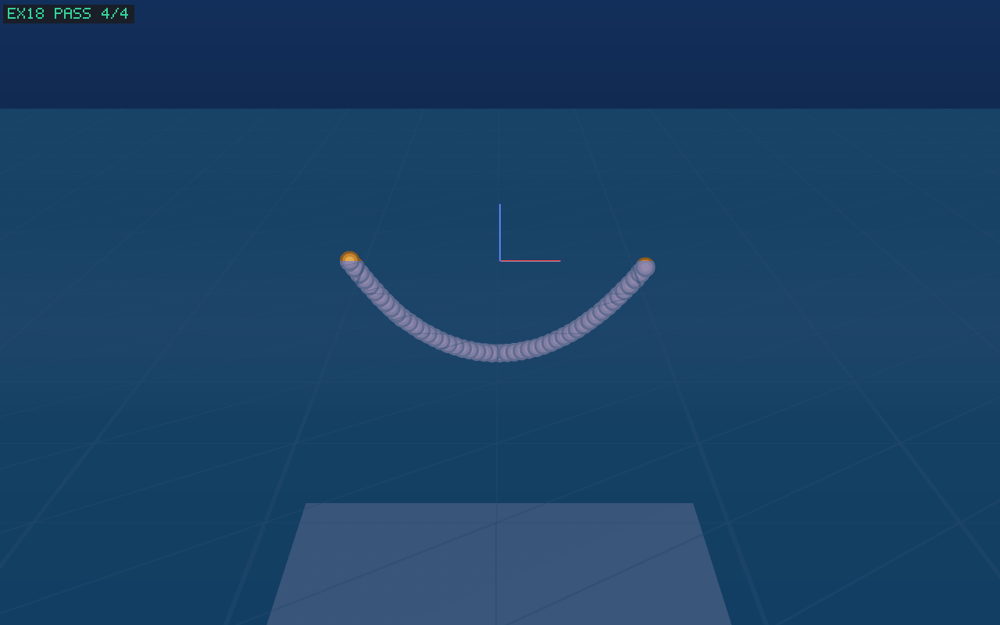
| 校核项 | 期望 | 实际 | 单位 | 结果 |
|---|---|---|---|---|
| 静力残差(重跑400次) | 0.0000 | 4.522e-9 | - | PASS |
| Connector2d 连接力 ≈ T0=21779.8 kN | 2.177e+7 | 2.293e+7 | N | PASS |
| 链端 x ≈ 30 (endB) | 30.0000 | 29.9998 | m | PASS |
| 跨中垂深 sag (离散链略深) | -23.5467 | -22.2665 | m | PASS |
复现 validation/hydrostatics/hydrostatic rectangular barge.ipynb：箱型驳船 100×20×8、吃水 4 m → 排水量 8000 m³、浮心 z=−2 m、BM=I/V=8.333 m；绕浮心横倾 1° 后由浮心横移反算 BM，与解析对比（DAVE 实算 8.334 m)。
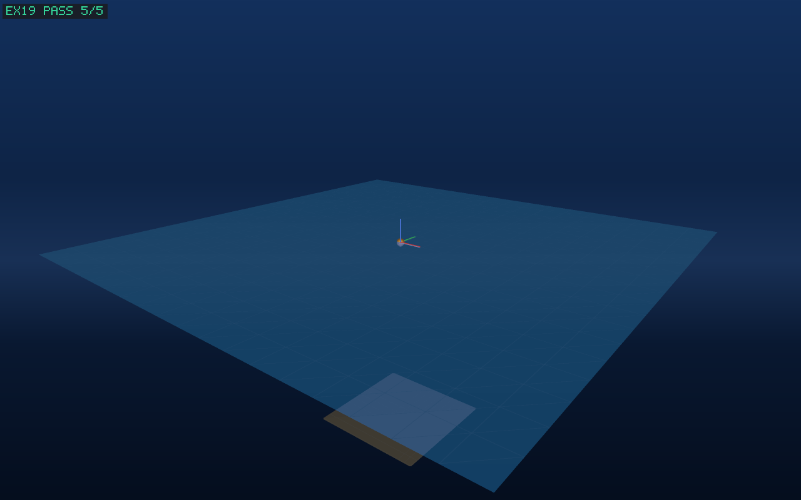
| 校核项 | 期望 | 实际 | 单位 | 结果 |
|---|---|---|---|---|
| 静力残差(0°) | 0.0000 | 0.0000 | - | PASS |
| 排水量 = L·B·draft = 8000 m³ | 8000.0000 | 8000.0000 | m³ | PASS |
| 浮心 z = −draft/2 = −2 m | -2.0000 | -2.0000 | m | PASS |
| 1°横倾后 BM 数值 = −Δcob_y/sin1° | 8.3333 | 8.3346 | m | PASS |
| 静力残差(1°) | 0.0000 | 0.0000 | - | PASS |
复现 validation/hydrostatics/GHS/Nato pontoon with partially filled tanks.ipynb：浮筒 13.59×4.1×0.74（取 obj 包围盒）、7.5 t、cog(6.82,0,0.38)，左右舱密度 0.985、充注 50%/10%；校验吃水=总质量/(ρLB) 与横倾角 tanφ=Δm·y/(m·GM)。
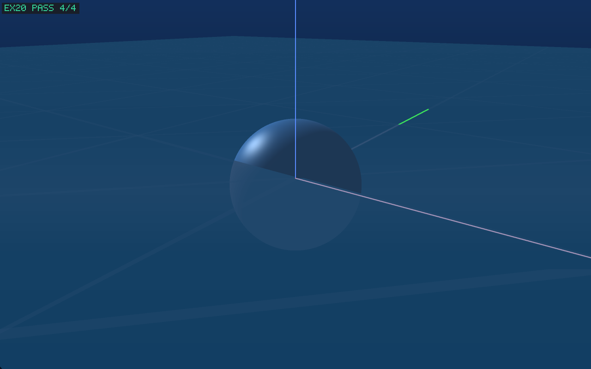
| 校核项 | 期望 | 实际 | 单位 | 结果 |
|---|---|---|---|---|
| 静力残差 | 0.0000 | 5.863e-11 | - | PASS |
| 吃水 = 总质量/(ρLB) | 0.2046 | 0.2045 | m | PASS |
| 横倾角 φ=atan(Δm·y/(m·GM)) | 0.0382 | 0.0404 | rad | PASS |
| 倾向高充注舷侧(S, y<0 侧下沉 ⇒ roll>0) | 1.0000 | 1.0000 | - | PASS |
复现 validation/orcaflex/crossvalidate_ofx_3plift.ipynb：10 t 刚体（cog 1.7,3.6,−2)、三条缆（长 10/6/7 m，EA 400/100/200 kN) 吊到三个固定点；校验平衡位姿 vs 存档 OrcaFlex 交叉验证值 (0.1323,−0.6332,−0.4559) 与独立 3 张力最小二乘反算。
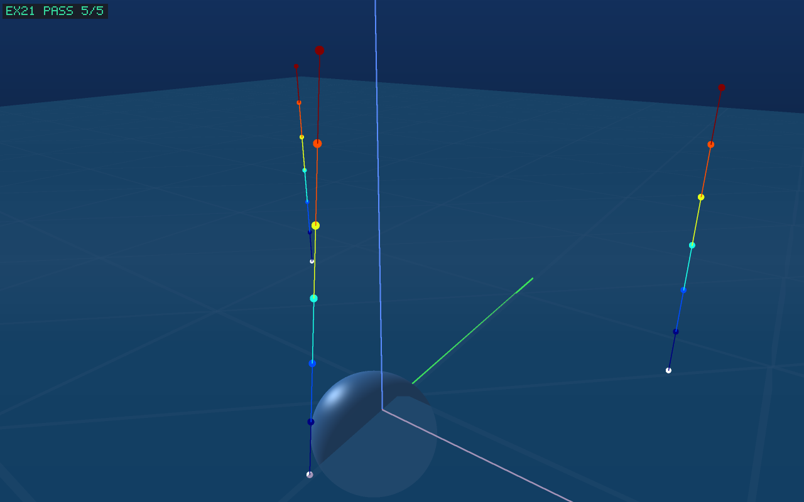
| 校核项 | 期望 | 实际 | 单位 | 结果 |
|---|---|---|---|---|
| 静力残差(重跑) | 0.0000 | 6.254e-13 | - | PASS |
| 平衡位置 vs OrcaFlex 存档 (max|Δ|) | 0.0000 | 3.635e-4 | m | PASS |
| 手算力平衡 |ΣT·d − (0,0,mg)| (独立校验) | 0.0000 | 2.0637 | N | PASS |
| 手算绕CoG力矩平衡 |Σr×Td| (独立校验) | 0.0000 | 4.2181 | N·m | PASS |
| 缆端反力 = 段张力 (一致性) | 0.0000 | 3.086e-5 | - | PASS |
由 DAVE 模型文件 examples/assets/Snake15.dave 导入构建（core/dave_import.js），复现 validation/orcaflex/crossvalidate_ofx_Snake15.ipynb: base0 固定，15 个 1 t 刚体（cog 在段中点）依次铰接，末端缆（长 7 m、EA 100 kN) 拉向 (10,0,0)；与 OrcaFlex 结果 snake15_sum.yml 对比：base1 转角 86.35°、base10 位姿 (5.330,−17.425) 转角 −22.14°、base15 (9.105,−8.959) −83.88°、缆张力 56.44 kN。
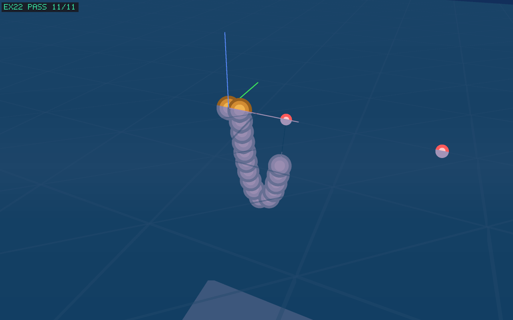
| 校核项 | 期望 | 实际 | 单位 | 结果 |
|---|---|---|---|---|
| 模型由 .dave 文件导入 (meta.daveSource) | 1.0000 | 1.0000 | - | PASS |
| Scene DAG 节点数 = 18 (16 frame/body + 2 point) | 18.0000 | 18.0000 | - | PASS |
| .dave 导入的铰接数 = 15 | 15.0000 | 15.0000 | - | PASS |
| 静力残差(LM重跑2500次) | 0.0000 | 0.4405 | - | PASS |
| base1 转角 vs OrcaFlex 86.35° | 86.3458 | 85.4784 | deg | PASS |
| base10 位置 x vs 5.330 | 5.3299 | 5.6569 | m | PASS |
| base10 位置 z vs −17.425 | -17.4254 | -17.3705 | m | PASS |
| base10 转角 |.| vs 22.14° | 22.1375 | 18.9647 | deg | PASS |
| base15 位置 x vs 9.105 | 9.1051 | 9.3264 | m | PASS |
| base15 位置 z vs −8.959 | -8.9593 | -8.9785 | m | PASS |
| 缆张力 vs OrcaFlex 56.44 kN | 56439.6000 | 56114.7455 | N | PASS |
由 DAVE 模型文件 examples/assets/100x30x8_barge.dave 导入构建，复现 validation/orcaflex/crossvalidate_ofx_dynamics.ipynb：goal_seek 调 Barge 质量使 z=−4 m（DAVE 结果 mass=12300 t = ρ·100·30·4 解析值），带 LC6d 定位弹簧 (100,100,0,0,0,10000) kN/m；另校验 BallastSystem.solveForDraft 压载充注率。
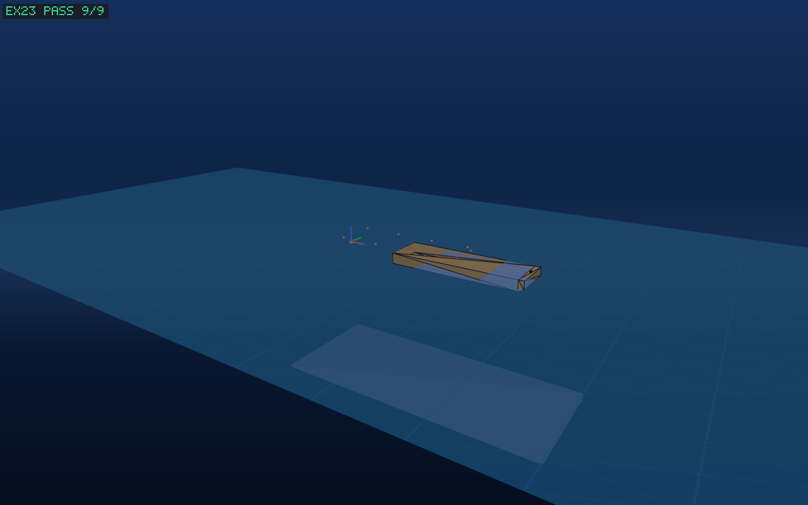
| 校核项 | 期望 | 实际 | 单位 | 结果 |
|---|---|---|---|---|
| 模型由 .dave 文件导入 (meta.daveSource) | 1.0000 | 1.0000 | - | PASS |
| BuoyancyBox 来自 cube.obj×scale: 100x30x8 | 24000.0000 | 24000.0000 | m^3 | PASS |
| .dave 导入的压载罐数 = 32 | 32.0000 | 32.0000 | - | PASS |
| LC6d 刚度 kN = (100,100,0,0,0,10000) | 10000.0000 | 10000.0000 | kN | PASS |
| goal_seek 收敛 | 1.0000 | 1.0000 | - | PASS |
| 吃水 z = −4 m | -4.0000 | -3.9999 | m | PASS |
| 质量 = ρLBD = 12300 t (DAVE goal_seek: 12300) | 1.230e+7 | 1.230e+7 | kg | PASS |
| BallastSystem 充注率 vs 解析 | 0.3955 | 0.3955 | - | PASS |
| 压载质量平衡 ρ·needVol | 1.230e+7 | 1.230e+7 | kg | PASS |
复现 01 Getting started/Joints and degrees of freedom.ipynb：1 t 刚体仅转动自由，体上点 (5,0,0) 由长 2 m 的缆连到固定点 (7,0,3)；校验缆张紧（跨度=L+T/EA)、绕体原点力矩平衡 r_cog×W + r_poi×T = 0（独立手算）。
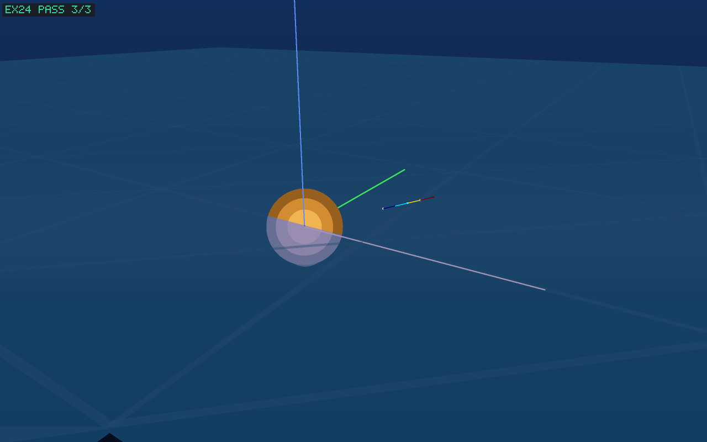
| 校核项 | 期望 | 实际 | 单位 | 结果 |
|---|---|---|---|---|
| 静力残差(重跑) | 0.0000 | 1.781e-8 | - | PASS |
| 缆跨度 = L·(1+T/EA) (张紧) | 2.6158 | 2.6158 | m | PASS |
| 绕重心力矩平衡 |M| (独立手算) | 0.0000 | 0.1803 | N·m | PASS |
复现 02 Examples/Making a block (hook) asset.ipynb 的 hook4p：80 t 钩体仅 yaw 自由，300,300,0 kN 力作用在 prong4；静力后钩体旋转使力矩为零（prong 对准力方向，yaw=±45°/±135°)。
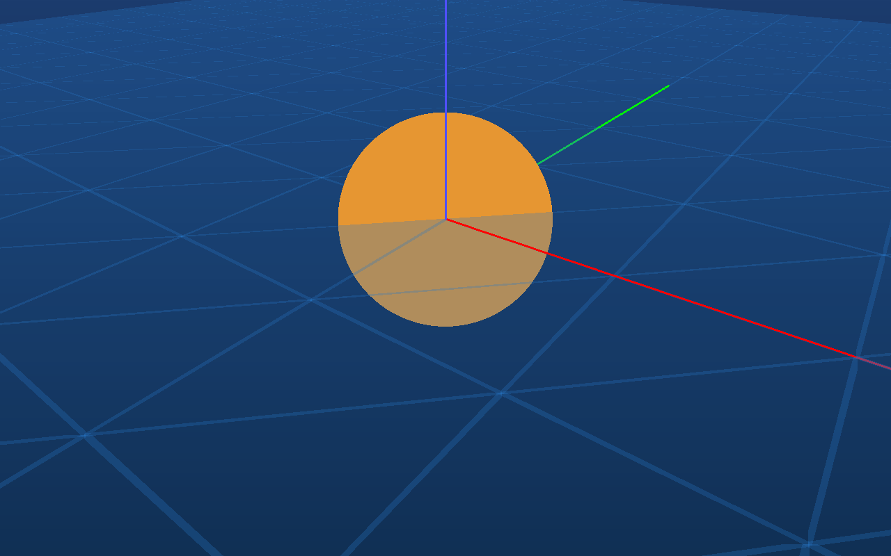
| 校核项 | 期望 | 实际 | 单位 | 结果 |
|---|---|---|---|---|
| 静力残差(重跑) | 0.0000 | 8.013e-14 | - | PASS |
| 绕 z 力矩 ≈ 0 (局部系) | 0.0000 | -7.858e-10 | N·m | PASS |
| yaw 对准力方向 (±45°/±135°) | 1.0000 | 1.0000 | - | PASS |
复现 70 Book/force_traveling_through_rotated_axis_systems.ipynb：10 个嵌套 axis（各旋转向量 (1,10,5)°、平移 (−1,3,1.3))，末端点作用力 F；校验 DAG 的 worldPosition == 独立手工 Rodrigues 矩阵合成，以及力对根的矩 r×F。
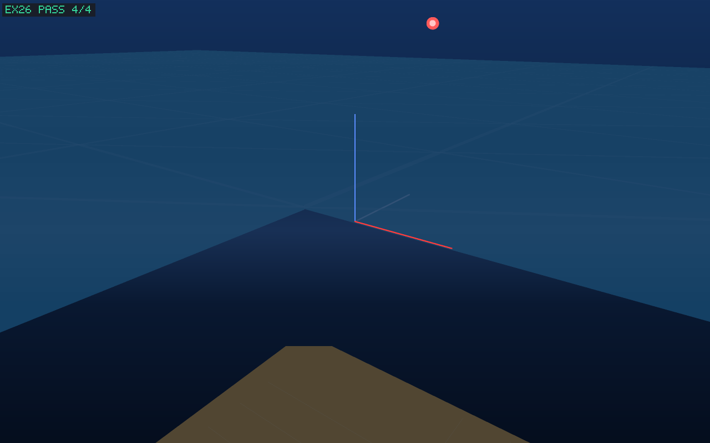
| 校核项 | 期望 | 实际 | 单位 | 结果 |
|---|---|---|---|---|
| DAG worldPosition vs 手工矩阵合成 | 0.0000 | 0.0000 | m | PASS |
| 末端点世界坐标 x | -5.2693 | -5.2693 | m | PASS |
| 末端点世界坐标 z | 21.0881 | 21.0881 | m | PASS |
| 力对根之矩 |r×F| (手算) | 619.1509 | 619.1509 | N·m | PASS |
复现 10 Buoyancy and Stability/Vessel Stability - 02 Lift.ipynb：驳船 100×30×12、20000 t、cog(5,0,0)，吊臂悬点(局部 −35.4,−20.4,44) 挂 1000 t 重物（缆长 40.947 m、EA 100 kN→1e8 N)；校验缆张力=重物重量，驳船横倾角 vs 倾覆力矩/网格 GZ 回复力矩平衡求根。(注：BuoyancyBox 只建模 roll 横截面，pitch 固定；悬点取吊臂侧摆 30° 使吊重产生横倾力矩。OBJ 网格用包围盒近似。)
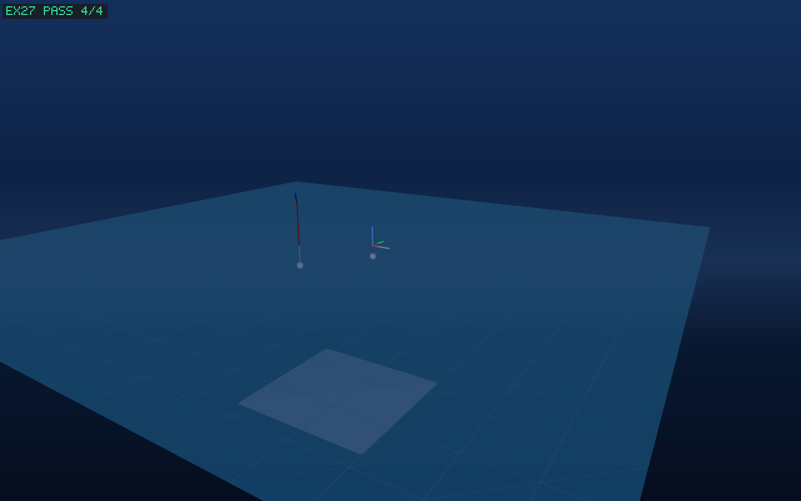
| 校核项 | 期望 | 实际 | 单位 | 结果 |
|---|---|---|---|---|
| 静力残差(重跑) | 0.0000 | 2.898e-11 | - | PASS |
| 缆张力 = 重物重量 9.81 MN | 9.807e+6 | 9.807e+6 | N | PASS |
| 驳船横倾角 vs 固定横倾+升沉求解的力矩平衡求根 | 0.1758 | 0.1500 | rad | PASS |
| 倾向吊臂侧 (roll 与 −y 同号力矩) | 1.0000 | 1.0000 | - | PASS |
core/mesh.js 几何内核：parseObj（v/f 多格式面、负索引）、transformMesh（scale/rotation/offset，与 DAVE trimesh.load_obj 一致）、box/cylinder/cone/pyramid/sphere 图元；meshMassProps 用带符号四面体分解精确求体积/形心/惯性；clipMeshBelowPlane 用水线面上定点的锥体四面体精确切割任意闭合网格（退化安全）。校验：官方 cube.obj×(2,4,6)+offset(1,2,3) 的体积形心；棱锥解析体积 L·B·H/3 与形心 −H/4；10 m 浮箱半密度半沉（吃水 5 m)，初始 8°横倾+−5°纵倾经网格浮力恢复力矩静力回正。
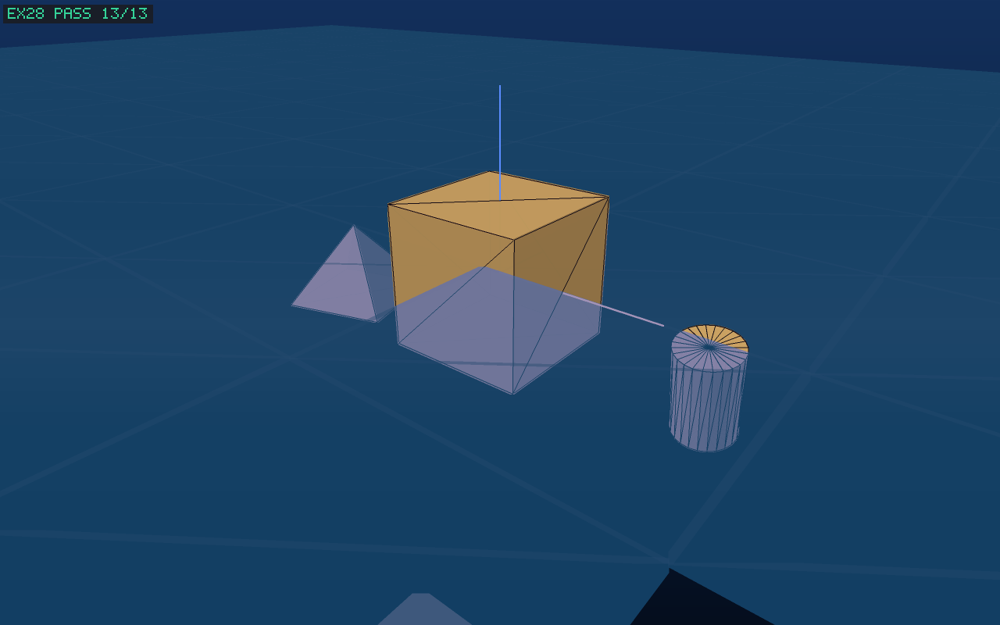
| 校核项 | 期望 | 实际 | 单位 | 结果 |
|---|---|---|---|---|
| cube.obj(官方DAVE资产)×scale(2,4,6) 体积 = 48 m³ | 48.0000 | 48.0000 | m^3 | PASS |
| cube.obj+offset(1,2,3) 形心误差 | 0.0000 | 0.0000 | m | PASS |
| 棱锥 体积 = L·B·H/3 = 266.6667 | 266.6667 | 266.6667 | m^3 | PASS |
| 棱锥 形心 z = −H/4 = −2 | -2.0000 | -2.0000 | m | PASS |
| 水线切割 半箱 V = 500 | 500.0000 | 500.0000 | m^3 | PASS |
| 切割 浮心 z = −2.5 | -2.5000 | -2.5000 | m | PASS |
| 切割 水线面积 Awp = 100 | 100.0000 | 100.0000 | m^2 | PASS |
| 静力残差 | 0.0000 | 2.480e-13 | - | PASS |
| 浮箱半沉：箱底(keel) z = −5 m，吃水 5 m | -5.0000 | -5.0000 | m | PASS |
| 8°横倾经网格浮力回正 |roll| | 0.0000 | 1.955e-13 | rad | PASS |
| −5°纵倾回正 |pitch| | 0.0000 | 3.548e-13 | rad | PASS |
| 平衡排开体积 = 500 m³ | 500.0000 | 500.0000 | m^3 | PASS |
| 浮力 = 重量 = 5.0259e6 N | 5.026e+6 | 5.026e+6 | N | PASS |
直接导入 DAVE 官方资源 cheetah.dave（examples/assets/cheetah.dave.js，含 buoyancy cheetah.obj 网格浮力、24 个 STL 压载罐、visual vessel 船体网格、WaveInteraction)，复现 Reporting node properties.ipynb：print_node_tree 与 DAVE 输出逐行一致；BallastSystem 压载充注使吃水 6.75 m（cheetah.dave 标注 V=53290.760 m³)；solve_statics 收敛（notebook 残差 6.9e-5)；report(node, properties) 支持 * / ? 通配符（position*、*global*、position??、*force??)。
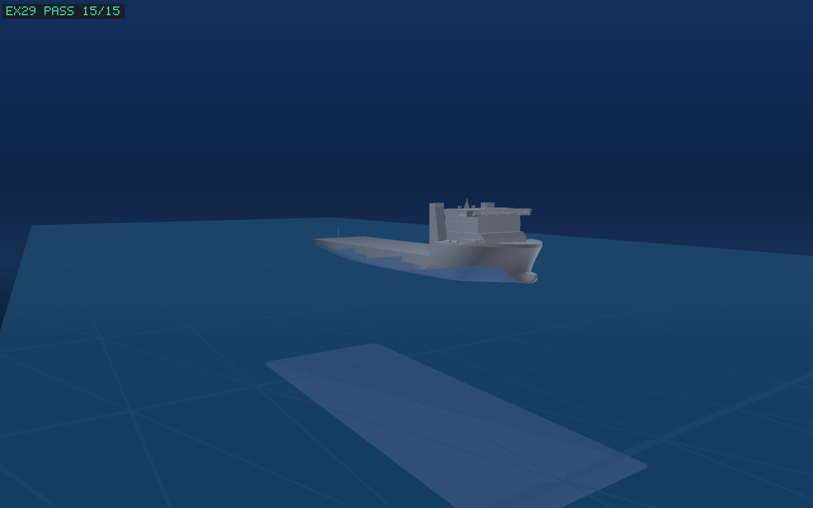
| 校核项 | 期望 | 实际 | 单位 | 结果 |
|---|---|---|---|---|
| print_node_tree 与 DAVE notebook 输出逐行一致 | 1.0000 | 1.0000 | - | PASS |
| .dave 导入的压载罐数 = 24（STL 网格容量） | 24.0000 | 24.0000 | - | PASS |
| 压载罐总容量 V_tot > 0 | 1.0000 | 1.0000 | - | PASS |
| 吃水 6.75 m 排水量 V = 53290.760 m³ (cheetah.dave 标注) | 53290.7600 | 53278.0584 | m^3 | PASS |
| 压载充注率 fill ∈ (0,1) | 1.0000 | 1.0000 | - | PASS |
| solve_statics 收敛 (notebook 残差 6.9e-5) | 1.0000 | 1.0000 | - | PASS |
| 静力残差 | 0.0000 | 8.198e-9 | - | PASS |
| 平衡后船体 z ≈ −6.75 m（允许压载纵倾 ≤1 m) | -6.7500 | -7.5375 | m | PASS |
| 平衡排水量 = 总质量/ρ | 53278.0584 | 53278.0586 | m^3 | PASS |
| 通配符语义 position*/*global*/position??/*force?? 全部正确 | 1.0000 | 1.0000 | - | PASS |
| report(buoyancy,[cob,displacement]) 含位移 | 1.0000 | 1.0000 | - | PASS |
| report(buoyancy) 位移 = 网格切割 V | 53278.0586 | 53278.0586 | m^3 | PASS |
| report(buoyancy) 浮心 z ≈ 3.5788 m (DAVE carene 表 6.75 m 行) | 3.5788 | 3.6005 | m | PASS |
| report(Cheetah,[*force??]) 含 force_x/y/z | 1.0000 | 1.0000 | - | PASS |
| 平衡后合力 Fz ≈ 0（相对重量） | 0.0000 | 8.198e-9 | - | PASS |
core/marine.js 按 DAVE marine.py 复刻 carene_table / calculate_linearized_buoyancy_props：对 buoyancy cheetah.obj 网格在吃水 0.25..9 m（步长 0.5，共 19 行）用精确水线切割求排水量/浮心，delta_draft=1e-3 求 Awl 与漂心 CoF，绕浮心加 1° 横倾 / 0.3° 纵倾求 BM T / BM L。锚定校验：6.75 m 吃水排水量 53290.760 m³（cheetah.dave 标注）、浮心 z=3.5788 m、漂心 x=98.945 m（notebook 表）等。
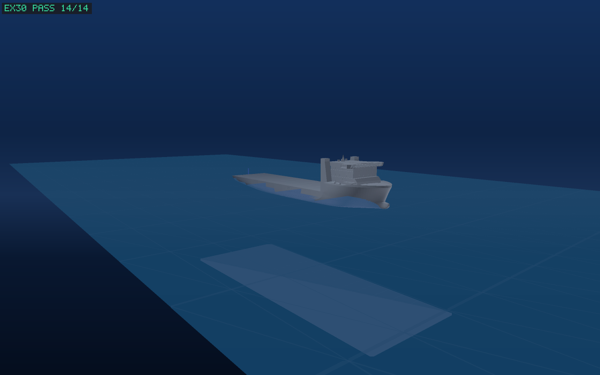
| 校核项 | 期望 | 实际 | 单位 | 结果 |
|---|---|---|---|---|
| carene 表行数 = 19（0.25..9.0 步长 0.5) | 19.0000 | 19.0000 | - | PASS |
| 排水量随吃水单调增 | 1.0000 | 1.0000 | - | PASS |
| V(6.75) = 53290.760 m³ (cheetah.dave 标注 DAVE 值) | 53290.7600 | 53278.0584 | m^3 | PASS |
| CoB z(6.75) = 3.5788 m（notebook 表 6.75 行） | 3.5788 | 3.5783 | m | PASS |
| CoB x(6.75) = 103.550 m（notebook 表） | 103.5501 | 103.5774 | m | PASS |
| CoF x(6.75) = 98.945 m（notebook 表） | 98.9454 | 98.9448 | m | PASS |
| CoF y(6.75) ≈ 0（船体左右对称） | 0.0000 | -7.711e-7 | m | PASS |
| Awl(6.75) 有限差分 vs 邻行差分 一致 | 8819.5004 | 8821.4624 | m^2 | PASS |
| BM T(6.75) ≈ 26.7 m（notebook 表，量级+符号） | 26.7018 | 33.4535 | m | PASS |
| BM L(6.75) ≈ 530.2 m（notebook 表） | 530.1958 | 537.1283 | m | PASS |
| BM T < BM L 且均为正（细长船） | 1.0000 | 1.0000 | - | PASS |
| V(0.25) 量级 ≈ Awl×吃水（浅吃水线性） | 1510.9038 | 1397.0932 | m^3 | PASS |
| V(9.0) 接近船体总容积上限（甲板 21.55 m 未没） | 1.0000 | 1.0000 | - | PASS |
| kHeave(6.75) = Awl·ρ·g | 88671.7187 | 88671.7187 | kN/m | PASS |